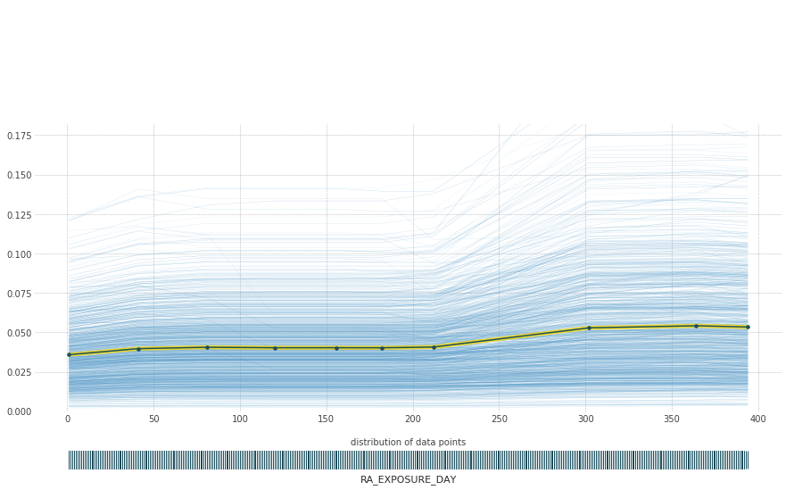
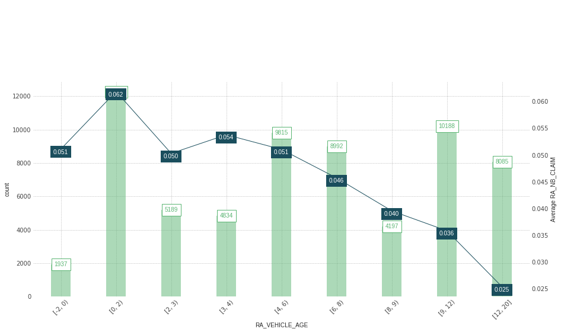
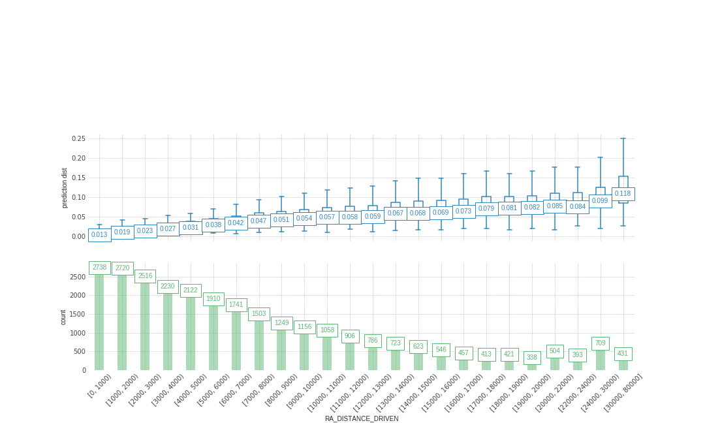

Variable selection on telematics data using SHAP and GBMP
Plan
- The theory
- Regression Trees
- Boosting algorithm & GBMP
- Shapley values
- Application
- Telematics data set insights
- Variable importance
- Partial dependence plot (PDP)
- SHAP values
- Modeling with selected variables
Regression Trees
Can be applied to both regression and classification problems.
Example
Predict a baseball player’s Salary
based on
$$R_1=\left( \mathbf{Y} | \mathbf{X_2} \leq 4,5 \right)=\exp(5,1068)=165 \ 114 \ \$$$
$$R_2=\left( \mathbf{Y} | \mathbf{X_2} > 4,5 \ ,\mathbf{X_1} \leq 117,5 \right) =402 \ 783 \ \$$$
$$R_3=\left( \mathbf{Y} | \mathbf{X_2} > 4,5 \ ,\mathbf{X_1} > 117,5 \right)=845 \ 307 \ \$$$
Advantages
Very easy to explain
More closely mirror human decision-making
Can be displayed graphically, and easily interpreted
Disadvantages
They generally do not have the same level of predictive accuracy
can be very non-robust
Boosting
The motivation for boosting was a procedure that combines the outputs of many “weak” classifiers to produce a powerful “committee.”
AdaBoost.M1
Most popular boosting algorithm due to Freund and Schapire (1997)
Consider a two-class problem, with the output variable coded as
$Y \in \left\{-1, 1\right\}$
Given a vector of predictor variables $X$, a classifier $G(X)$ produces a prediction taking one of the two values $\left\{-1, 1\right\}$. The error rate on the training sample is
$$\overline{err}=\frac{1}{N}\sum_i^N \mathbb{1}_{\left\{ y_i\neq G(x_i) \right\}}$$
and the expected error rate on future predictions is
$$E_{XY} \mathbb{1}_{(Y\neq G(X))}$$
The purpose of boosting is to
sequentially apply the weak classification algorithm to repeatedly modified versions of the data
thereby producing a sequence of weak classifiers
$$G_m(x), m=1,2, \dots, M$$
The predictions from all of them are then combined through a weighted majority vote to produce the final prediction:
$$G(x)=\text{sign}\Bigg(\sum_{m=1}^M \alpha_m G_m(x) \Bigg).$$
Here $\alpha_1, \alpha_2, \dots ,\alpha_M$ are computed by the boosting algorithm, and weight the contribution of each respective $G_m(x)$
Their effect is to give higher influence to the more accurate classifiers in the sequence.
GBM

GBMP

Shapley Values
A method from coalitional game theory
tells us how to fairly distribute the “payout” among the features
General Idea

We have trained a machine learning model

The average prediction for all apartments is €310,000
How much has each feature value contributed to the prediction compared to the average prediction?
linear regression models
The effect of each feature is the weight of the feature times the feature value.
For more complex models
The Shapley value, coined by Shapley (1953)
comes from cooperative game theory
Coalitional game theory
Players cooperate in a coalition and receive a certain profit from this cooperation
The “game” : is the prediction task for a single instance of the dataset.
The “gain” is the actual prediction for this instance minus the average prediction for all instances
The “players” are the feature values of the instance that collaborate to receive the gain (= predict a certain value).
Our goal is to explain the difference between the actual prediction (€300,000) and the average prediction (€310,000)
a difference of -€10,000.
How do we calculate the Shapley value for one feature?
It's the average marginal contribution of a feature value across all possible coalitions

We repeat this computation for all possible coalitions.
The Shapley value is the average of all the marginal contributions to all possible coalitions.
The Shapley value is defined via a value function $\upsilon$ of players in $S$
$$ \phi_j(\upsilon)=\sum_{S\subseteq \left\{x_1, \dots, x_p\right\}\left\{x_j\right\}} \frac{|S|\text{!}(p-|S|-1)\text{!}}{p\text{!}}(\upsilon (S \cup \left\{ x_j\right\})-\upsilon(S))$$
where $S$ is a subset of the features used in the model
$x$ is the vector of feature values of the instance to be explained
$p$ is the number of features
$\upsilon_{x}(S)$ is the prediction for feature values in set S that are marginalized over features that are not included in set $S$:
$$\upsilon_{x}(S)=\int\hat{f}(x_{1},\ldots,x_{p})d\mathbb{P}_{x\notin{}S}-E_X(\hat{f}(X))$$
where we perform multiple integrations for each feature that is not contained $S$
All possible coalitions (sets) of feature values have to be evaluated with and without the j-th feature to calculate the exact Shapley value
the exact solution to this problem becomes problematic as the number of possible coalitions exponentially increases as more features are added.
Strumbelj et al. (2014) propose an approximation with Monte-Carlo sampling:
$$\hat{\phi}_{j}=\frac{1}{M}\sum_{m=1}^M\left(\hat{f}(x^{m}_{+j})-\hat{f}(x^{m}_{-j})\right)$$
where $\hat{f}(x^{m}_{+j})$ is the prediction for $x$, but with a random number of feature values replaced by feature values from a random data point , except for the respective value of feature $j$. The x-vector $x^{m}_{-j}$ is almost identical to $x^{m}_{+j}$ , but the value $x_j^{m}$ is also taken from the sampled x
Application
We have classified the data into three types
- The characteristics of the policyholder
- of the vehicle
- driving habits
Policyholders

Postal code

Population density

Some driving habits

Distance driven - Toronto

distance driven - Ottawa

Vehicle characteristics

Some descriptive statistics

With one or more accidents

Two or more

Three and more

Claims frequency Modeling
No data preprocessing
- It handle missing data
- One Hot Encode Categorical Data
- $$X_{\text{sex}}= \left\{ \begin{array}{ll} 0 \quad \text{ if the insured is a man,}\\ 1 \quad \text{ if the insured is a woman.} \end{array} \right.$$
Data split
89504 observations
- 70% train (62572 observations)
- 5-Fold Cross Validation
- 30% test (26932 observations)
Tree construction (training) and prediction can be accelerated with CUDA-capable GPUs

Variable importance

Partial dependence plot (PDP)
Distance driven

Exposure (days)
Vehicule age

Pecent day of use

Average number of days of use per week

Average hours driven
Average weekly number of trips

Be careful with PDP!
let’s take a look at the test data set
Distance driven
SHAP values
47 000 miles
1 mile
9 000 miles
Interaction effects

Predictions
Scoring rules for count data